Cluster selection in Urban areas
Program Flow chart

Code
# Install Python packages via pip
system("pip install requests pandas geopy openpyxl geopandas matplotlib numpy reportlab PyPDF2")
# Download files from Google Drive using gdown
system("gdown https://drive.google.com/uc?id=1BQnzVmLHCfw84z-RnfWbdgcpNIBNgKWc")
system("gdown https://drive.google.com/uc?id=18L5b_ya_YxoD7-PCfw8ftzeXU0jh6BIy")
# Make directory
dir.create("GIS map temp", showWarnings = FALSE)
# Unzip file
unzip("district_boundries.zip", exdir = "GIS")
# Remove zip file
unlink("district_boundries.zip")
# Remove folder
unlink("sample_data", recursive = TRUE)Import Libraries and Utility Functions
This section imports all necessary libraries for data processing, file operations, geographic analysis, visualization, and PDF generation. It also includes utility functions for:
- File Download: Download files from URLs with error handling and progress tracking
- Random Filename Generation: Create unique filenames to avoid conflicts during file operations
Key Libraries: - pandas, numpy: Data manipulation and analysis - geopandas, geopy: Geographic data processing - matplotlib: Data visualization - reportlab, PyPDF2: PDF generation and manipulation - requests: HTTP requests for file downloads - openpyxl: Excel file operations
Code
import requests
import os
import random
import string
import pandas as pd
import geopy
from openpyxl import Workbook
import geopandas as gpd
import matplotlib.pyplot as plt
import numpy as np
from collections import Counter
import warnings
from reportlab.lib import colors
from reportlab.lib.pagesizes import A4
from reportlab.lib.units import inch
from reportlab.pdfgen import canvas
from reportlab.pdfbase import pdfmetrics
from reportlab.pdfbase.ttfonts import TTFont
from reportlab.platypus import Table, TableStyle, SimpleDocTemplate
from PyPDF2 import PdfWriter, PdfReader
from IPython.display import display
# Suppress specific warnings to keep output clean
warnings.filterwarnings('ignore')
def download_file(url, folder_path, filename):
"""
Download a file from URL and save it to specified folder
Returns: filepath if successful, None if failed
"""
try:
# Create directory if it doesn't exist
if not os.path.exists(folder_path):
os.makedirs(folder_path)
print(f"✓ Created directory: {folder_path}")
# Download file with streaming to handle large files
response = requests.get(url, stream=True)
response.raise_for_status()
filepath = os.path.join(folder_path, filename)
with open(filepath, 'wb') as file:
for chunk in response.iter_content(chunk_size=8192):
file.write(chunk)
print(f"✓ File downloaded successfully: {filepath}")
return filepath
except requests.exceptions.RequestException as e:
print(f"✗ Error downloading file: {e}")
return None
def generate_random_filename(length=10, extension=".xlsx"):
"""Generate a random filename to avoid conflicts"""
characters = string.ascii_letters + string.digits
random_filename = ''.join(random.choice(characters) for _ in range(length)) + extension
return random_filenameData Download and Initial Processing
This step handles the initial data acquisition and preprocessing:
Key Operations:
1. Download Data: Downloads UFS (Urban Frame Survey) data from MOSPI website for Goa state
2. Load Excel File: Reads the downloaded Excel file into a pandas DataFrame
3. Clean Headers: Removes metadata rows and assigns meaningful column names
4. Extract State Info: Captures state name and code for later use
Data Structure:
- S_Code, S_Name: State code and name
- D_Code, District: District code and name
- T_Code, Town: Town code and name
- IV_Unit_No, Block_No: Investigation unit and block identifiers
- No_of_Households: Number of households in each block
This creates the foundation dataset for cluster sampling analysis.
Code
# =============================================================================
# STEP 1: DATA DOWNLOAD AND INITIAL PROCESSING
# =============================================================================
print("="*80)
print("STEP 1: DOWNLOADING AND LOADING DATA")
print("="*80)
url = "https://mospi.gov.in/sites/default/files/publication_reports/UFS/UFS_30_Goa7112023.xlsx"
filename = generate_random_filename()
folder_path = "states"
# Download the Excel file
download_file(url, folder_path=folder_path, filename=filename)
# Load and process the Excel file
filepath = os.path.join(folder_path, filename)
df = pd.read_excel(filepath)
print(f"\nInitial data shape: {df.shape}")
print(f"Initial columns: {list(df.columns)}")
# Remove first 2 rows (likely headers) and limit to first 10 columns
df = df.iloc[2:]
df = df.iloc[:, :10]
# Assign meaningful column names
new_column_names = ['S_Code', 'S_Name', 'D_Code', 'District', 'T_Code', 'Town', 'Code', 'IV_Unit_No', 'Block_No', 'No_of_Households']
df.columns = new_column_names
# Extract state information
state_name = df.iloc[0, 1]
state_code = df.iloc[0, 0]
print(f"\n State Name: {state_name}")
print(f" State Code: {state_code}")
print(f"Processed data shape: {df.shape}")
print(f"\nSample of processed data:")
print(df.head())🏛️ State Name: Goa 🏛️ State Code: 30 📊 Processed data shape: (1592, 10)
Preprocessed data set:
| S_Code | S_Name | D_Code | District | T_Code | Town | IV_Unit_No | Block_No | No_of_Households |
|---|---|---|---|---|---|---|---|---|
| 30 | Goa | 01 | North Goa | 001 | Aldona | 17 | 0001 | 63 |
| 30 | Goa | 01 | North Goa | 001 | Aldona | 17 | 0001 | 69 |
| 30 | Goa | 01 | North Goa | 001 | Aldona | 17 | 0001 | 83 |
| 30 | Goa | 01 | North Goa | 001 | Aldona | 17 | 0001 | 89 |
| 30 | Goa | 01 | North Goa | 001 | Aldona | 17 | 0001 | 90 |
District Selection and Filtering
This step allows users to select specific districts for analysis:
Process:
1. User Input: Prompts user to enter district codes separated by spaces
2. Data Filtering: Filters the main dataset to include only selected districts
3. Validation: Shows which districts are included in the filtered dataset
Purpose:
- Enables targeted analysis for specific geographical areas
- Reduces dataset size for more focused sampling
- Allows comparison between different district combinations
Output: Filtered dataset containing only the selected districts with summary statistics.
Code
# =============================================================================
# STEP 2: DISTRICT SELECTION AND FILTERING
# =============================================================================
print("\n" + "="*80)
print("STEP 2: DISTRICT SELECTION AND FILTERING")
print("="*80)
# Get user input for district codes
D_Code_list = ["01","02"]
print(f"Selected district codes: {D_Code_list}")
# Filter data for selected districts
filtered_df = df[df['D_Code'].isin(D_Code_list)]
print(f"Filtered data shape: {filtered_df.shape}")
# Show unique districts in filtered data
unique_districts = filtered_df[['D_Code', 'District']].drop_duplicates()
print(f"\n Districts in filtered data:")
display(unique_districts.to_string(index=False))Selected district codes: ['01', '02']
Filtered data shape: (1592, 10)
| D_Code | District |
|---|---|
| 01 | North Goa |
| 02 | South Goa |
Exclusion Logic
This step implements quality control by removing Investigation Units (IV Units) with insufficient data for the sampling process
Quality Criteria: - Threshold: IV Units with fewer than 20 blocks are considered insufficient for reliable sampling - Analysis Level: Examines each Town-IV Unit combination within districts
Process:
1. Frequency Analysis: Counts blocks per IV Unit in each town
2. Threshold Application: Identifies IV Units with <20 blocks
3. Exclusion Decision: Removes insufficient IV Units based on Excluder parameter
4. Data Cleaning: Creates filtered dataset with only sufficient IV Units
Output: Clean dataset with only statistically viable IV Units for cluster sampling.
Code
# =============================================================================
# STEP 3: EXCLUSION LOGIC - REMOVE IV UNITS WITH <20 BLOCKS
# =============================================================================
print("\n" + "="*80)
print("STEP 3: APPLYING EXCLUSION LOGIC")
print("="*80)
# Set exclusion parameter (1 to enable exclusion, 0 to disable)
Excluder = 1 # Set to 1 to enable exclusion, 0 to disable
excluded_combinations_by_district = {}
print("🔍 Analyzing IV Units by district...")
for district_code, group in filtered_df.groupby('D_Code'):
print(f"\n📍 Processing District: {district_code}")
# Count frequency of each T_Code + IV_Unit_No combination
er = group.groupby(['T_Code', 'IV_Unit_No']).size().reset_index(name='Frequency')
print(f" 📊 Total T_Code + IV_Unit_No combinations: {len(er)}")
# Find combinations with less than 20 blocks
excluded_combinations = er[er['Frequency'] < 20][['T_Code', 'IV_Unit_No']]
print(f" ❌ Combinations with <20 blocks: {len(excluded_combinations)}")
# Skip if all combinations would be excluded and Excluder is 0
if len(excluded_combinations) == er.shape[0] and Excluder == 0:
print(f" ⚠️ All combinations would be excluded, skipping district {district_code}")
continue
if not excluded_combinations.empty:
excluded_combinations_by_district[district_code] = [tuple(x) for x in excluded_combinations.to_records(index=False)]
print(f" 🚫 Excluded combinations: {excluded_combinations_by_district[district_code]}")
# Create a set of all excluded combinations for filtering
excluded_combinations = {
(d_code, t_code, iv_unit_no)
for d_code, combinations in excluded_combinations_by_district.items()
for t_code, iv_unit_no in combinations
}
print(f"\n📊 Total excluded combinations across all districts: {len(excluded_combinations)}")
# Apply exclusion filter
filtered_df1 = filtered_df[
~filtered_df.set_index(['D_Code', 'T_Code', 'IV_Unit_No']).index.isin(excluded_combinations)
].reset_index(drop=True)
print(f"📊 Data shape after exclusions: {filtered_df1.shape}")
print(f"📊 Rows removed: {len(filtered_df) - len(filtered_df1)}")🔍 Analyzing IV Units by district…
📍 Processing District: 01
📊 Total T_Code + IV_Unit_No combinations: 56
❌ Combinations with <20 blocks: 42
🚫 Excluded combinations:
(‘001’, ‘0001’), (‘002’, ‘0001’), (‘007’, ‘0001’), (‘008’, ‘0001’),
(‘010’, ‘0001’), (‘011’, ‘0001’), (‘012’, ‘0001’), (‘013’, ‘0001’),
(‘014’, ‘0002’), (‘014’, ‘0003’), (‘015’, ‘0001’), (‘016’, ‘0001’),
(‘016’, ‘0002’), (‘016’, ‘0003’), (‘016’, ‘0005’), (‘017’, ‘0001’),
(‘019’, ‘0001’), (‘021’, ‘0001’), (‘022’, ‘0001’), (‘023’, ‘0001’),
(‘024’, ‘0001’), (‘025’, ‘0001’), (‘026’, ‘0001’), (‘027’, ‘0001’),
(‘028’, ‘0001’), (‘029’, ‘0001’), (‘030’, ‘0001’), (‘031’, ‘0001’),
(‘032’, ‘0001’), (‘033’, ‘0001’), (‘034’, ‘0001’), (‘035’, ‘0001’),
(‘038’, ‘0001’), (‘039’, ‘0001’), (‘040’, ‘0001’), (‘042’, ‘0001’),
(‘046’, ‘0001’), (‘048’, ‘0001’), (‘049’, ‘0001’), (‘050’, ‘0001’),
(‘051’, ‘0001’), (‘052’, ‘0001’)
📍 Processing District: 02
📊 Total T_Code + IV_Unit_No combinations: 29
❌ Combinations with <20 blocks: 11
🚫 Excluded combinations:
(‘001’, ‘0001’), (‘002’, ‘0001’), (‘005’, ‘0001’), (‘009’, ‘0002’),
(‘010’, ‘0002’), (‘011’, ‘0001’), (‘014’, ‘0001’), (‘015’, ‘0001’),
(‘016’, ‘0001’), (‘017’, ‘0001’), (‘018’, ‘0001’)
📊 Total excluded combinations across all districts: 53
📊 Data shape after exclusions: (890, 10)
📊 Rows removed: 702
Cluster Calculation and Proportional Allocation
This step implements the core statistical methodology for cluster sampling:
Sampling Strategy:
1. IV unit Count: Counts unique IV Units per district
2. Proportional Allocation: Distributes target clusters based on district size with respect to the number of IV units
Key Calculations:
- District Proportion = IV Units in District / Total IV Units
- Allocated Clusters = Target Clusters × District Proportion
- Minimum Allocation: Each district gets at least 1 cluster (+1 adjustment)
User Input: Total number of clusters to be selected for the survey
Output: District-wise cluster allocation plan with verification totals.
Code
# =============================================================================
# STEP 4: CLUSTER CALCULATION AND ALLOCATION
# =============================================================================
print("\n" + "="*80)
print("STEP 4: CLUSTER CALCULATION AND ALLOCATION")
print("="*80)
# Count unique IV units per district and town
g = filtered_df1.iloc[:, :8].groupby(by=["D_Code", "T_Code"])[['IV_Unit_No']].nunique()
print("🔢 IV Units per District-Town combination:")
print(g.head(10))
# Sum up total clusters per district
unique_iv_unit_counts = g.groupby(by=["D_Code"]).sum()
print(f"\n📊 Total IV Units per district:")
print(unique_iv_unit_counts)
# Calculate proportions
unique_iv_unit_counts_proportion = unique_iv_unit_counts / unique_iv_unit_counts.sum()
unique_iv_unit_counts['Proportion'] = unique_iv_unit_counts_proportion
print(f"\n📊 District proportions:")
print(unique_iv_unit_counts[['IV_Unit_No', 'Proportion']])
# Get total number of clusters from user
num_clusters = int(input("Enter the total number of clusters to select: "))
print(f"🎯 Target total clusters: {num_clusters}")
# Allocate clusters proportionally to each district
unique_iv_unit_counts['No_of_Cluster'] = (unique_iv_unit_counts_proportion * num_clusters)
unique_iv_unit_counts['No_of_Cluster'] = unique_iv_unit_counts['No_of_Cluster'].apply(int) + 1
print(f"\n📊 Cluster allocation per district:")
print(unique_iv_unit_counts[['IV_Unit_No', 'Proportion', 'No_of_Cluster']])
# Add district names to results
district_names = df[['D_Code', 'District']].drop_duplicates()
result = pd.merge(unique_iv_unit_counts, district_names, on='D_Code', how='left')
result = result[['D_Code', 'District', 'IV_Unit_No', 'Proportion', 'No_of_Cluster']]
print(f"\n🎯 Final cluster allocation:")
print(result.to_string(index=False))
# Verify total allocated clusters
total_allocated = result['No_of_Cluster'].sum()
print(f"\n✅ Total clusters allocated: {total_allocated}")
print(f"🎯 Target clusters: {num_clusters}")
print(f"📊 Difference: {total_allocated - num_clusters}")📊 Total IV Units per district
| D_Code | IV_Unit_No |
|---|---|
| 01 | 14 |
| 02 | 18 |
📊 District proportions
| D_Code | IV_Unit_No | Proportion |
|---|---|---|
| 01 | 14 | 0.4375 |
| 02 | 18 | 0.5625 |
🎯 Target total clusters: 131
🎯 Final cluster allocation
| D_Code | District | IV_Unit_No | Proportion | No_of_Cluster |
|---|---|---|---|---|
| 01 | North Goa | 14 | 0.4375 | 58 |
| 02 | South Goa | 18 | 0.5625 | 74 |
✅ Total clusters allocated: 132
🎯 Target clusters: 131
📊 Difference: 1
Utility Functions for Report Generation
This section defines helper functions for creating professional output reports:
Excel Generation Functions: - extract_clusters_to_excel(): Creates multi-sheet Excel workbooks with one sheet per district - Formats data with proper headers and structure
PDF Generation Functions: - add_text_page(): Adds formatted text content to PDF documents - create_table_pdf(): Generates professional tables with styling - Handles page breaks and font formatting
Data Formatting Functions: - format_excluded_combinations(): Creates readable summaries of excluded IV Units - Provides clear documentation of data quality decisions
Purpose: These functions enable automated generation of professional reports for survey planning and documentation, ensuring consistent formatting and comprehensive coverage of sampling decisions.
Code
# =============================================================================
# UTILITY FUNCTIONS FOR EXCEL AND PDF GENERATION
# =============================================================================
def extract_clusters_to_excel(selected_clusters, output_file):
"""Create Excel file with separate sheets for each district"""
workbook = Workbook()
workbook.remove(workbook.active) # Remove default sheet
for district_code, df in selected_clusters.items():
if not df.empty:
sheet_name = f"District_{district_code}"
worksheet = workbook.create_sheet(title=sheet_name)
# Add headers
worksheet.append(list(df.columns))
# Add data
for row in df.values.tolist():
worksheet.append(row)
workbook.save(output_file)
print(f"✅ Excel file created: {output_file}")
def add_text_page(pdf_canvas, text):
"""Add text content to PDF canvas"""
pdf_canvas.setFont("CourierNew", 12)
text_lines = text.split('\n')
y_position = 800
for line in text_lines:
if y_position < 50:
pdf_canvas.showPage()
pdf_canvas.setFont("CourierNew", 12)
y_position = 800
pdf_canvas.drawString(72, y_position, line)
y_position -= 14
pdf_canvas.showPage()
def create_table_pdf(df, output_path):
"""Create PDF with table from DataFrame"""
doc = SimpleDocTemplate(output_path, pagesize=A4)
table_data = [df.columns.tolist()] + df.values.tolist()
table = Table(table_data)
style = TableStyle([
('BACKGROUND', (0, 0), (-1, 0), colors.grey),
('TEXTCOLOR', (0, 0), (-1, 0), colors.whitesmoke),
('ALIGN', (0, 0), (-1, -1), 'CENTER'),
('FONTNAME', (0, 0), (-1, 0), 'CourierNew'),
('FONTNAME', (0, 1), (-1, -1), 'CourierNew'),
('BOTTOMPADDING', (0, 0), (-1, 0), 12),
('BACKGROUND', (0, 1), (-1, -1), colors.white),
('GRID', (0, 0), (-1, -1), 1, colors.black),
])
table.setStyle(style)
doc.build([table])
def format_excluded_combinations(excluded_dict):
"""Format excluded combinations for display"""
if not excluded_dict:
return "No IV Units were excluded based on the frequency criteria.\n"
formatted_text = "District wise excluded IV Units:\n\n"
for district, exclusions in excluded_dict.items():
formatted_text += f"District Code: {district}\n"
formatted_text += "Town_Code || IV_Unit_No\n"
formatted_text += "-" * 25 + "\n"
for town_code, iv_unit_no in exclusions:
formatted_text += f"{town_code:<10} || {iv_unit_no}\n"
formatted_text += "\n"
return formatted_text📋 RESULT SUMMARY
- State Name: Goa
- State Code: 30
- District Codes: 01, 02
- Total Clusters Requested: 131
- Total Clusters Allocated: 132
- Exclusion Applied: Yes
📊 Cluster Allocation by District
| D_Code | District | IV_Unit_No | Proportion | No_of_Cluster |
|---|---|---|---|---|
| 01 | North Goa | 14 | 0.4375 | 58 |
| 02 | South Goa | 18 | 0.5625 | 74 |
Result Summary and Sampling Preparation
This step creates a comprehensive summary of the sampling plan and prepares for execution:
Summary Components:
1. Metadata: State name, state code, selected districts
2. Allocation Summary: Target vs. allocated clusters
3. Quality Control: Documentation of exclusions applied
4. District Breakdown: Detailed allocation table
Iteration Setup:
- Multiple Samples: Allows generation of multiple independent samples
- Reproducibility: Each iteration creates a different random sample
Code
# =============================================================================
# STEP 5: PREPARE RESULT SUMMARY
# =============================================================================
print("\n" + "="*80)
print("STEP 5: PREPARING RESULT SUMMARY")
print("="*80)
result_string = []
result_string.append('\n\nRESULT SUMMARY')
result_string.append(f'State Name: {df.iloc[0, 1]}')
result_string.append(f'State Code: {df.iloc[0, 0]}')
result_string.append(f'District Codes: {" ".join(D_Code_list)}')
result_string.append(f'Total Clusters Requested: {num_clusters}')
result_string.append(f'Total Clusters Allocated: {total_allocated}')
result_string.append(f'Exclusion Applied: {"Yes" if Excluder else "No"}')
result_string.append('\n' + '-'*55)
result_string.append(result.to_string(index=False))
final_result = '\n'.join(result_string)
print(final_result)
# Get number of sample iterations from user
multiplier = int(input("Enter number of sample iterations to generate (usually 1): ") or "1")
print(f"🔄 Will generate {multiplier} independent sample(s)")Random Cluster Sampling Implementation
This is the core sampling execution step that implements probability-based cluster selection:
Two-Stage Sampling Process:
Stage 1: IV Unit Selection - Random selection of IV Units from each district - Uses allocated cluster counts from Step 4 - Implements replacement logic when needed
Stage 2: Block Selection
- Within selected IV Units, randomly samples UFS blocks - Ensures actual sample size matches allocation
Sampling Features: - Without Replacement: Preferred method when sufficient IV Units available - With Replacement: Used when target clusters exceed available IV Units - Proportional Allocation: Maintains district-level representativeness - Frequency Tracking: Documents how often each IV Unit is selected
Output: Dictionary of selected clusters organized by district, ready for geocoding and reporting.
Code
# =============================================================================
# STEP 6: CLUSTER SAMPLING AND REPORT GENERATION
# =============================================================================
print("\n" + "="*80)
print("STEP 6: CLUSTER SAMPLING AND REPORT GENERATION")
print("="*80)
for z in range(multiplier):
print(f"\n🔄 Processing iteration {z+1}/{multiplier}")
selected_clusters = {}
# Sample clusters for each district
for district_code, row in unique_iv_unit_counts.iterrows():
print(f"\n📍 Sampling for District: {district_code}")
num_clusters_for_district = int(row['No_of_Cluster'])
num_iv_units = int(row['IV_Unit_No'])
print(f" 🎯 Target clusters: {num_clusters_for_district}")
print(f" 📊 Available IV units: {num_iv_units}")
# Get data for this district
district_df = filtered_df1[filtered_df1['D_Code'] == district_code]
print(f" 📊 District data rows: {len(district_df)}")
# Get unique IV units in this district
unique_df = district_df.drop_duplicates(subset=['T_Code', 'IV_Unit_No'])[['T_Code', 'IV_Unit_No']]
print(f" 📊 Unique IV units available: {len(unique_df)}")
# Sample IV units (with or without replacement)
if num_iv_units >= num_clusters_for_district:
sampled_df = unique_df.sample(n=num_clusters_for_district, replace=False)
print(f" ✅ Sampled {num_clusters_for_district} IV units without replacement")
else:
sampled_df = pd.concat([
unique_df.sample(n=unique_df.shape[0], replace=False),
unique_df.sample(n=num_clusters_for_district - unique_df.shape[0], replace=True)
])
print(f" ⚠️ Sampled with replacement (needed {num_clusters_for_district}, had {num_iv_units})")
# Count frequency of selected IV units
frequency_df = sampled_df.groupby(['T_Code', 'IV_Unit_No']).size().reset_index(name='Frequency')
print(f" 📊 IV unit frequency distribution:")
print(f" {frequency_df.to_string(index=False)}")
# Sample UFS blocks from selected IV units
UFS_samples = []
for _, row2 in frequency_df.iterrows():
t_code = row2['T_Code']
iv_unit_no = row2['IV_Unit_No']
freq = row2['Frequency']
# Get all blocks for this IV unit
available_blocks = district_df[(district_df['T_Code'] == t_code) & (district_df['IV_Unit_No'] == iv_unit_no)]
N = available_blocks.shape[0]
# Sample blocks (cannot sample more than available)
if N < freq:
UFS_sample = available_blocks.sample(n=N, replace=False)
print(f" ⚠️ Town {t_code}, IV {iv_unit_no}: sampled {N} blocks (needed {freq})")
else:
UFS_sample = available_blocks.sample(n=freq, replace=False)
print(f" ✅ Town {t_code}, IV {iv_unit_no}: sampled {freq} blocks from {N} available")
UFS_samples.append(UFS_sample)
# Combine all samples for this district
selected_clusters[district_code] = pd.concat(UFS_samples, ignore_index=True)
print(f" 📊 Total selected blocks for district: {len(selected_clusters[district_code])}")
# Show summary of this iteration
print(f"\n✅ ITERATION {z+1} SAMPLING COMPLETE")
print(f"📊 Summary of selected clusters:")
for district_code, df_dist in selected_clusters.items():
print(f" District {district_code}: {len(df_dist)} clusters selected")🔄 Sampling Iteration Results
Number of iterations: 1
📍 District 01 — North Goa
- 🎯 Target clusters: 58
- 📊 Available IV units: 14
- 📊 District data rows: 370
- 📊 Unique IV units available: 14
- ⚠️ Sampled with replacement (needed 58, had 14)
📊 IV Unit Frequency Distribution (Result of SRS)
| T_Code | IV_Unit_No | Frequency |
|---|---|---|
| 003 | 0001 | 1 |
| 004 | 0001 | 3 |
| 005 | 0001 | 2 |
| 006 | 0001 | 7 |
| 009 | 0001 | 5 |
| 014 | 0001 | 4 |
| 016 | 0004 | 5 |
| 018 | 0001 | 7 |
| 020 | 0001 | 5 |
| 036 | 0001 | 2 |
| 037 | 0001 | 3 |
| 041 | 0001 | 8 |
| 043 | 0001 | 4 |
| 047 | 0001 | 2 |
✅ Block Sampling Summary
- Town 003, IV 0001 → 1 / 20 blocks
- Town 004, IV 0001 → 3 / 23 blocks
- Town 005, IV 0001 → 2 / 28 blocks
- Town 006, IV 0001 → 7 / 20 blocks
- Town 009, IV 0001 → 5 / 23 blocks
- Town 014, IV 0001 → 4 / 31 blocks
- Town 016, IV 0004 → 5 / 32 blocks
- Town 018, IV 0001 → 7 / 39 blocks
- Town 020, IV 0001 → 5 / 29 blocks
- Town 036, IV 0001 → 2 / 30 blocks
- Town 037, IV 0001 → 3 / 21 blocks
- Town 041, IV 0001 → 8 / 29 blocks
- Town 043, IV 0001 → 4 / 25 blocks
- Town 047, IV 0001 → 2 / 20 blocks
📊 Total selected blocks: 58
📍 District 02 — South Goa
- 🎯 Target clusters: 74
- 📊 Available IV units: 18
- 📊 District data rows: 520
- 📊 Unique IV units available: 18
- ⚠️ Sampled with replacement (needed 74, had 18)
📊 IV Unit Frequency Distribution (Result of SRS)
| T_Code | IV_Unit_No | Frequency |
|---|---|---|
| 003 | 0001 | 3 |
| 004 | 0001 | 4 |
| 006 | 0001 | 7 |
| 007 | 0001 | 3 |
| 008 | 0001 | 4 |
| 009 | 0001 | 3 |
| 009 | 0003 | 6 |
| 009 | 0004 | 4 |
| 009 | 0005 | 2 |
| 009 | 0006 | 4 |
| 010 | 0001 | 5 |
| 010 | 0003 | 5 |
| 010 | 0004 | 7 |
| 010 | 0005 | 1 |
| 012 | 0001 | 5 |
| 013 | 0001 | 3 |
| 019 | 0001 | 5 |
| 021 | 0001 | 3 |
✅ Block Sampling Summary
- Town 003, IV 0001 → 3 / 23 blocks
- Town 004, IV 0001 → 4 / 21 blocks
- Town 006, IV 0001 → 7 / 25 blocks
- Town 007, IV 0001 → 3 / 31 blocks
- Town 008, IV 0001 → 4 / 24 blocks
- Town 009, IV 0001 → 3 / 32 blocks
- Town 009, IV 0003 → 6 / 25 blocks
- Town 009, IV 0004 → 4 / 46 blocks
- Town 009, IV 0005 → 2 / 29 blocks
- Town 009, IV 0006 → 4 / 33 blocks
- Town 010, IV 0001 → 5 / 32 blocks
- Town 010, IV 0003 → 5 / 24 blocks
- Town 010, IV 0004 → 7 / 38 blocks
- Town 010, IV 0005 → 1 / 32 blocks
- Town 012, IV 0001 → 5 / 22 blocks
- Town 013, IV 0001 → 3 / 30 blocks
- Town 019, IV 0001 → 5 / 29 blocks
- Town 021, IV 0001 → 3 / 24 blocks
📊 Total selected blocks: 74
Geographic Coordinate Assignment (Geocoding)
This step adds spatial coordinates to enable mapping and geographic analysis:
Geocoding Process:
1. Location Query: Constructs queries using “Town, District, State” format
2. Service Provider: Uses ArcGIS geocoding service via geopy library
3. Coordinate Extraction: Retrieves latitude and longitude for each location
4. Error Handling: Manages failed geocoding attempts gracefully
Data Enhancement: - Spatial Coordinates: Adds Latitude and Longitude columns - Quality Reporting: Tracks successful vs. failed geocoding attempts - Coverage Analysis: Reports geocoding success rates by district
Code
# =============================================================================
# STEP 7: GEOCODING
# =============================================================================
print(f"\n🌍 STEP 7: GEOCODING SELECTED LOCATIONS")
print("-" * 50)
locator = geopy.geocoders.ArcGIS(user_agent="mygeocoder")
for district_code, df_dist in selected_clusters.items():
if not df_dist.empty:
print(f"\n📍 Geocoding for District {district_code}...")
for index, row in df_dist.iterrows():
try:
# Create location query using town, district, and state
location_query = f"{row['Town']}, {row['District']}, {state_name}"
location = locator.geocode(location_query)
if location:
df_dist.loc[index, 'Latitude'] = location.latitude
df_dist.loc[index, 'Longitude'] = location.longitude
print(f" ✅ {row['Town']}: ({location.latitude:.4f}, {location.longitude:.4f})")
else:
df_dist.loc[index, 'Latitude'] = None
df_dist.loc[index, 'Longitude'] = None
print(f" ❌ {row['Town']}: Location not found")
except Exception as e:
print(f" ❌ Error geocoding {row['Town']}: {e}")
df_dist.loc[index, 'Latitude'] = None
df_dist.loc[index, 'Longitude'] = None
# Show geocoding summary for this district
geocoded_count = df_dist['Latitude'].notna().sum()
total_count = len(df_dist)
print(f" 📊 Geocoded {geocoded_count}/{total_count} locations ({geocoded_count/total_count*100:.1f}%)")Output Generation and Final Documentation
This final step generates comprehensive outputs and provides project completion summary:
Output Files Generated:
1. Excel Reports: Multi-sheet workbooks with one sheet per district - Contains all selected cluster details - Includes geographic coordinates - Formatted for field use
- Directory Structure: Creates organized folder system
map/: Reserved for mapping outputstemp/: Temporary processing filesGIS/: Geospatial data files
Quality Assurance: - Sample Verification: Displays sample of selected clusters - Count Validation: Verifies cluster counts match allocation - Coordinate Check: Shows geocoding success rates
Final Summary: - Iteration Tracking: Documents number of independent samples generated - File Naming: Uses standardized naming convention with state identifiers - Performance Metrics: Reports total clusters and processing statistics
Deliverables: Ready-to-use cluster sampling results for urban survey implementation, complete with coordinates and detailed documentation for field teams.
Code
# =============================================================================
# STEP 8: GENERATE OUTPUT FILES
# =============================================================================
print(f"\n📄 STEP 8: GENERATING OUTPUT FILES")
print("-" * 50)
# Generate Excel output
excel_filename = f"Urban Report[EXCEL-{z+1}]-{state_name}_{state_code}.xlsx"
extract_clusters_to_excel(selected_clusters, output_file=excel_filename)
# Create directories if they don't exist
os.makedirs("map", exist_ok=True)
os.makedirs("temp", exist_ok=True)
os.makedirs("GIS", exist_ok=True)
print(f"\n✅ PROCESSING COMPLETE FOR ITERATION {z+1}")
print(f"📊 Summary of selected clusters:")
for district_code, df_dist in selected_clusters.items():
print(f" District {district_code}: {len(df_dist)} clusters selected")
# Display first few selected clusters for verification
print(f"\n🔍 Sample of selected clusters:")
sample_df = pd.concat(selected_clusters.values()).head(10)
print(sample_df[['District', 'Town', 'IV_Unit_No', 'Block_No', 'Latitude', 'Longitude']].to_string(index=False))
print(f"\n🎉 ALL ITERATIONS COMPLETED!")
print(f"📁 Output files generated with prefix: Urban Report[EXCEL]-{state_name}_{state_code}")
print(f"📊 Total sample iterations: {multiplier}")
# Final summary
total_clusters_generated = sum(len(df_dist) for df_dist in selected_clusters.values())
print(f"📈 Clusters per iteration: ~{total_clusters_generated}")
print(f"📈 Total clusters across all iterations: ~{total_clusters_generated * multiplier}")